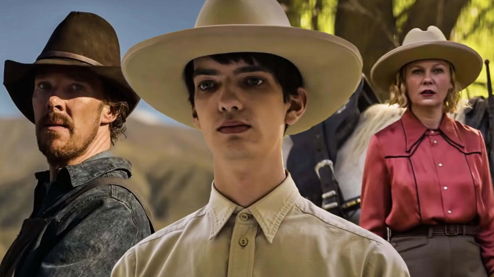
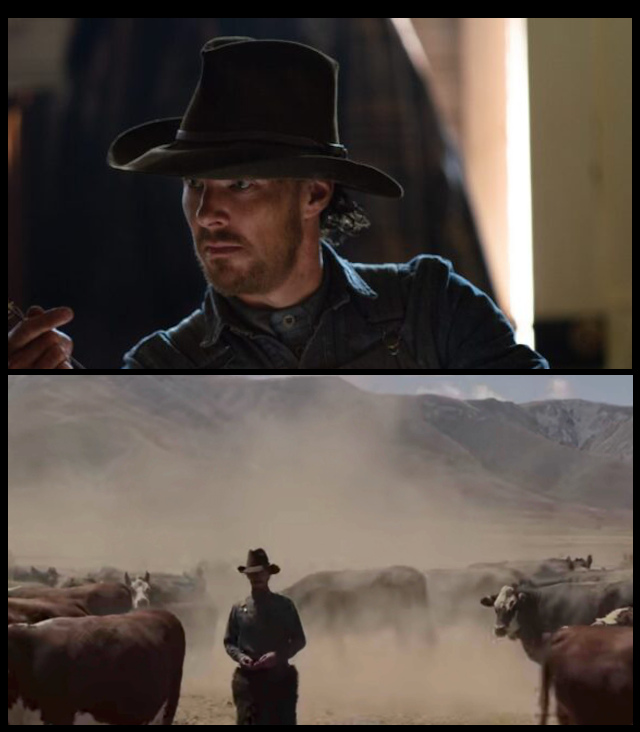
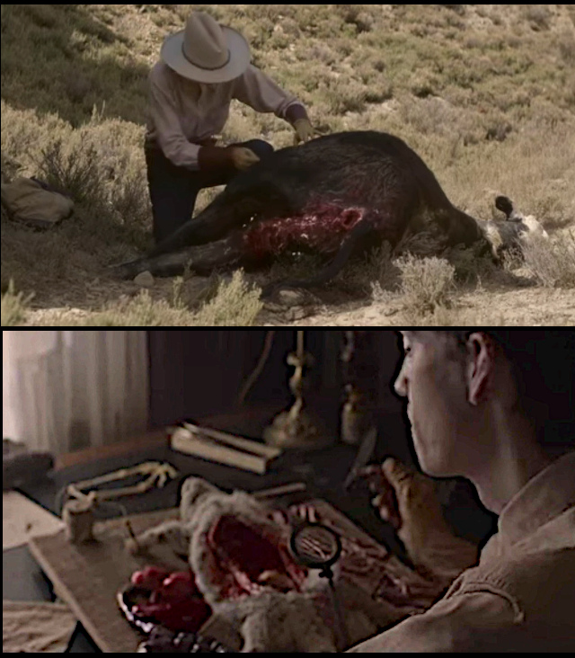
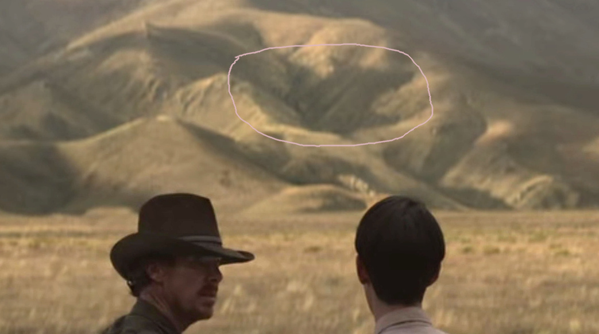

The Power of the Dog
A Film Review
Director/screenwriter Jane Campion's "The Power of the Dog" is
a psychological drama about a ranching family in the Montana
of 1925. Here are the three main characters:

The woman Rose is slightly blurred. The blurring draws your
attention to the two men and, indeed, most of the drama in
this film involves their relationship.
Rose's son Peter, whom
you see in the center, is wearing white indicating that he is
a good guy. However his face doesn't quite support that
conclusion. Her brother-in-law Phil on the left is wearing
black indicating he is a bad guy. But again the face doesn't
quite support that conclusion.
As with this promotional photograph, the film has a lot of
subtlety baked in. A couple examples:
-
Early on in back-to-back scenes we see Peter twirling himself
in a hula hoop and then Phil twirling a chair. Indeed that is the
way much of their relationship appears to us: Peter is
twirled, Phil is the twirler.
-
Very often, even in scenes crowded with people, just one
person is in focus. This suggests that the film's characters
are not well connected with each other.
-
Early in their marriage Rose and George commune at a roadside
vista. Then the scene cuts away to a brewing storm. (A cliché
in film editing is less noticeable than in literature.)
Rose is a widow whose physician husband commited suicide. Her
difficulties organize the story's presentation. As in a
traditional play there are five acts:
-
Phil, Peter, Phil's brother George, and Rose are introduced in
this act and we get to see something of their relationships.
-
Tension rises because George courts Rose against Phil's
wishes.
-
A crisis arises when Rose moves to the ranch and is humiliated
intentionally by Phil and unintentionally by George.
-
Things calm down a bit when we see Phil is not as tough as he
would have us believe.
-
In the denouement we see Rose drinking too much, taking a step
towards standing up to Phil, being accepted by George's
parents, and restablishing rapport with George.
However most of this long act is devoted to the drama between
Phil and Peter. Only at the end do you see how this is related
to Rose.
English actor Benedict Cumberbatch plays Phil. It's hard
to believe he isn't a nasty, boorish cowboy.

From the silhouette you might think Phil is armed with two six
shooters. He's not. Those bulges at his hips are just his
chaps. This film is not a old-style western and it wasn't
filmed in Montana, but some effort was been made to imitate
the genre. Although the New Zealand scenery lacks authenticity you will not be
disappointed in it.
We get very little backstory for Phil. However this
boorish cowboy turns out to have graduated Phi Beta Kappa from
Yale— unlike his brother George who was unable to complete
college.
Phil and George couldn't be more different. George
wants very much to fit into
Montana's high society whereas Phil tries hard to avoid such a
fate. Their
ability
to communicate with each other is so poor you wonder how they
can successfully run a ranch together.
Years ago the brothers took control of a ranch from
their parents. The parents are well-to-do and may have been owners more than they were
ranchers. The brothers were taught how to ranch by a
mysterious, and much revered, cowboy named “Bronco Henry”. Midway through
the film it becomes apparent that Bronco Henry taught Phil
about sex too.
Peter wants to be a doctor and spends a lot of time with his
father's medical books and with hands-on practice dissecting
animals.

Notice that Peter wears gloves when dissecting a potentially
diseased animal.
In the fifth act Phil teaches Peter about ranching and
one begins to wonder if Peter may become to Phil as Phil was to Bronco
Henry. Be that as it may, Peter's version of manhood is
different than what we see in his behavior.
We learn what Peter thinks in the film's only voiceover.
“When my father passed I wanted nothing more
than my mother's happiness. For what kind of a man would I
be, if I did not help my mother?”
It is Phil that Rose needs saving from.
Jane Campion is not above obfuscating her themes. For one
thing that
voiceover appears in the initial credits and so we are liable
to forget it. For another, there are two dog scenes which
have nothing to do with the title of the film.
In the first Phil rather cruelly calls his dog away
from playing with Peter. In the second Phil realizes that
Peter is the only other person who can see the dog in the
foothills.

These obfuscations are minor. The film has plenty of
hints about the direction it is going. Most people will not
get those hints on first viewing. I certainly did not.
However if you pay
close attention to
everything in the film's last scene,
you will figure things out. That scene shows
how Peter expresses his manhood and what that
has to do with the film's title. You will recognize that
scene without difficulty because it begins with Peter reading
this excerpt from the Bible:
“Deliver my soul from the sword; my darling from
the power of the dog.”
The dog here represents Jesus's own people, who sent him to the
Romans to be crucified.
Spoiler Alert
Assigning this kind of meaning to the word “dog” is not
unusual. Dogs are close to us but they can turn on us. In
the Middle East today, as in Biblical times, dogs are considered unclean.
So this film's title refers to someone close to us who turns on
us, as some dogs might, and knowingly causes our death.
The clear reference is to Peter who has become close to
Phil and yet causes Phil's death by infecting him with
anthrax. Peter is Phil's dog.
If you get a chance to rewatch the film you will see
several hints that Peter knows what he is doing. The most obvious is Peter's use of
gloves when dissecting the diseased cow and also when handling
the cowhide strips that Phil uses to finish the rope. Phil has no
protection when his sticks his hand with its open wound into a
tub of water containing the diseased cowhide. This is no
accident; those cowhide strips had been
hanging to dry before Peter put them in a tub and brought them in to Phil.
If we let our minds wander a bit, the title becomes
even more meaningful. Indirectly it refers to people
close to us who, intentionally or not, cause us harm.
Phil intentionally torments Rose. He is Rose's dog.
George unintentionally torments Rose by insisting she play
the piano for a discerning audience. During this part of the
film he too is Rose's dog.
Take care you do not become someone's dog.
More reviews and information about finding streaming sources
at
Watch and Talk